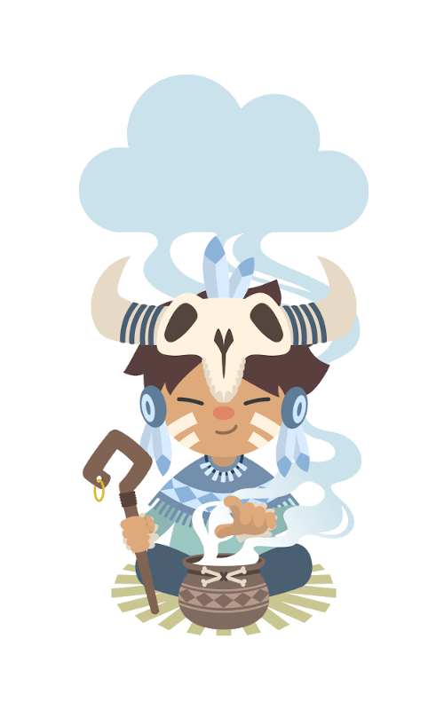

Getting Started with Calumet
Calumet is a desktop companion for Salesforce administration and DevOps — query, compare, deploy and audit your orgs from one tabbed workbench.
Five steps take you from a fresh install to a connected workspace. Each screen below is annotated — follow the numbered markers.
1 = do this, in order · highlighted fields are the ones that matter.

First launch — master password
On first launch Calumet asks for a master password. It never leaves your machine — it's the key used to encrypt your stored org credentials. There's no recovery, only a reset that wipes the secrets, so pick one you'll remember. After unlocking, the global configuration (Step 1) opens.
Step 1 — Global configuration
Application-wide setup. Only one field is required to start — everything else is optional.
Step 2 — The main window
After configuring, you land here. You have no org connected yet — the menu is where you fix that.
Step 3 — Create your first org connection
Menu → New Org opens Env config. Fill it in following the numbered order.
org type. A Production or
Developer Edition org must use Prod; otherwise
Calumet targets the sandbox endpoint and the login fails.
Step 4 — Choose your application
Calumet groups tabs into applications (named sets of tabs). The menu's right-most item shows the active one — click it to pick the app you want.
Step 5 — Customize your application
Each application defines its own tab set. Add, remove, reorder — or create a brand-new application for a different workflow.
Available tabs
Selected tabs
You're ready
Global settings set, an org connected, an application arranged — you have a working workspace. Pick your org in the selector and open the SOQL tab to confirm the connection, then explore PermissionSet, Compare and Deploy. Every tab has its own help panel. Welcome aboard. 🚀